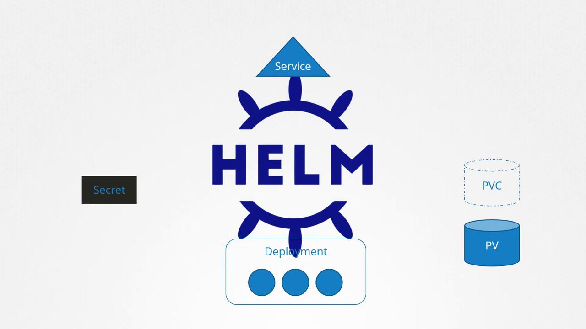

🛸 Helm Introduction
Documentation Index
Fetch the complete documentation index at: https://notes.kodekloud.com/llms.txt
Use this file to discover all available pages before exploring further.
Helm Introduction
This article explores Helms role in simplifying the management of complex Kubernetes applications by treating them as cohesive packages.
In this article, we will explore Helm and its role in simplifying the management of complex Kubernetes applications. While Kubernetes excels at orchestrating infrastructure, handling multiple interconnected objects in a single application can become challenging. For example, deploying a WordPress site might require several components, including:
- A Deployment to run the pods for components such as MySQL database servers or web servers.
- A Persistent Volume for database storage.
- A Persistent Volume Claim to request storage.
- A Service to expose the web server.
- A Secret to securely store the admin password.
Traditionally, each of these objects would be defined in separate YAML files and applied individually using the kubectl apply command. Managing configurations across multiple files becomes tedious and error-prone—if, for instance, you need to increase the persistent volume size from 20 GB to a higher capacity, every related YAML file must be manually updated. Additionally, upgrading or removing the application involves tracking down and managing all individual objects.
Consider the following YAML snippet:
apiVersion: v1
kind: Secret
metadata:
name: wordpress-admin-password
data:
key: CajnHWVUxSdzIZQzg0SERXhBQTvQ1FzN2JE9PQ==
---
apiVersion: v1
kind: PersistentVolume
metadata:
name: wordpress-pv
spec:
capacity:
storage: 20Gi
accessModes:
- ReadWriteOne
gcePersistentDisk:
pdName: wordpress-2
fsType: ext4
While organizing related objects into separate files (for example, placing deployment configurations in mysql-deployment.yaml) can offer some clarity, it still requires searching across multiple files to update settings.

Enter Helm. Unlike Kubernetes, which considers each object independently, Helm recognizes that these objects are part of a cohesive package—such as a WordPress application. With Helm, you manage the application as a single unit instead of juggling multiple YAML files.
Consider this analogy: a computer game is composed of hundreds or thousands of files (executables, audio, graphics, configuration data). Instead of downloading and organizing each file manually, you run an installer that efficiently places everything in the correct locations. Helm provides a similar level of abstraction for your Kubernetes manifests. It allows you to install, upgrade, roll back, and uninstall an application, regardless of how many individual objects it encompasses.
For example, to install a WordPress package using Helm, you would execute:
helm install wordpress ...
Helm leverages a central configuration file—typically named values.yaml—to manage custom settings. This file might look like:
wordpressUsername: user
wordpressEmail: user@example.com
wordpressFirstName: FirstName
wordpressLastName: LastName
This centralized configuration lets you adjust critical settings—such as persistent volume sizes, website names, admin passwords, and database configurations—in one place, eliminating the need to modify multiple YAML files.
By centralizing configuration management, Helm significantly streamlines application lifecycle management in Kubernetes.
Managing the application lifecycle becomes even simpler with Helm. With a single command, you can upgrade your application, and Helm calculates the necessary changes to each object. Rolling back to a previous version or uninstalling the application is equally straightforward. For example, a typical workflow might involve:
helm install wordpress ...
helm upgrade wordpress ...
helm rollback wordpress ...
helm uninstall wordpress ...
By treating Kubernetes applications as cohesive packages rather than isolated objects, Helm reduces administrative overhead and simplifies application management. This package and release management approach allows you to focus on application development rather than micromanaging individual Kubernetes objects.
For further reading, consider visiting the Kubernetes Documentation and learning more about Helm.
Original Title: Helm Introduction
يمكنك استخدام الزر أدناه للعودة للقائمة.